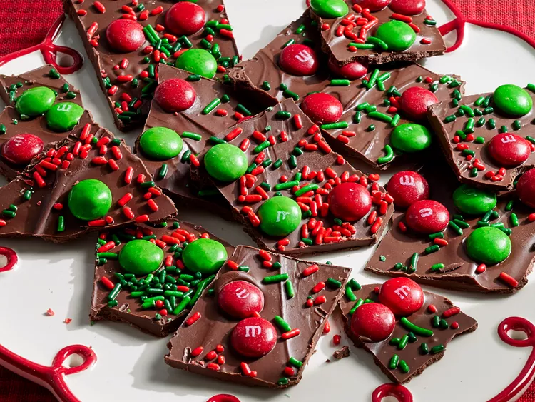

Home
Christmas Bark

Description:
"This Christmas bark, with red and green M&Ms and sprinkles,
is easy to make; you only need a microwave and refrigerator.
The recipe variations, mint chocolate and salted caramel pretzel,
offer different choices of color, texture, and flavor,
with the flexibility to pick whatever type of chocolate you want."
Ingredients:
- Cooking Spray
- 8oz chocolate or vanilla flavor candy coating (almond bark), chopped
- 8oz milk, semisweet, or dark chocolate, chopped, or white baking chips
- 1tbsp shortening
- 1/3 cup red and green M&Ms
- 1tbsp red and green sprinkles
Steps:
- Gather all ingredients.
- Line a large baking sheet with heavy foil; grease foil with cooking spray.
- Combine candy coating, chocolate, and shortening in a large microwave-safe bowl. Microwave on High until chocolate melts, stirring every 30 seconds.
- Pour mixture onto the prepared baking sheet; spread out evenly, 1/4 inch thick.
- Sprinkle with candy pieces and sprinkles. Chill until firm, about 30 minutes.
- Break candy into pieces.